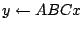

Next: About this document ...
Partitioning sparse matrices for parallel preconditioned
iterative methods
Bora Ucar
Dept. of Mathematics and Computer Science, Emory University
Suite W401, 400 Dowman Drive, Atlanta GA 30322
ubora@mathcs.emory.edu
Cevdet Aykanat
We will discuss parallelization techniques for the
preconditioned iterative methods that use explicit
preconditioners such as approximate inverses or factored
approximate inverses. Applications of these preconditioners
require sparse matrix-vector multiplication (SpMxV)
operations. Roughly speaking, the problem reduces to
partitioning two or more matrices together in order to
efficiently parallelize the computations of the form
. Note that the computations
are
performed as successive SpMxV operations, and hence there
are dependencies among the input and output vectors of these
SpMxV operations. Additional dependencies are imposed by the
linear vector operations that take part in a full step of
the chosen iterative method. We will first discuss how to
analyze the preconditioned iterative methods to determine
the dependencies between the inputs and outputs of the SpMxV
operations. We will give a short account of such
dependencies for a number of widely used methods including
BiCGStab, preconditioned conjugate gradients, and GMRES.
Next, we will develop hypergraph models which capture the
dependencies among the input and output vectors of the SpMxV
operations with different matrices. We will show that
partitioning a single hypergraph amounts to simultaneous
partitioning of the matrices in
computations
in such a way that the total volume of communication is
minimized and an appropriate balance criterion among the
processor loads is maintained. We will present experimental
results obtained using a parallel implementation of the
right preconditioned BiCGStab method on a PC cluster.
This is a joint work with Prof C. Aykanat of Bilkent
University, Ankara, Turkey.
Next: About this document ...
Bruce Fast
2006-03-11